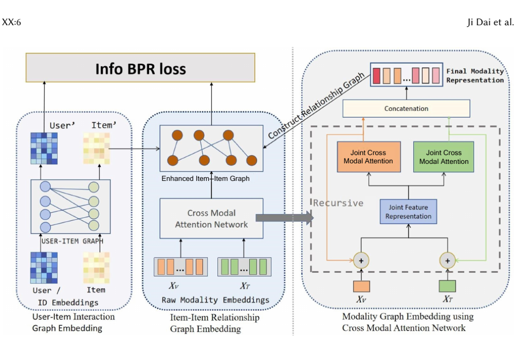

01 / About
Research with a visible consequence.
My current work asks where and how multimodal evidence should influence recommendation. I am interested in structured routing, coarse-to-fine prediction, and decoding procedures that can revise an uncertain decision rather than commit too early.
A longer-term thread asks how an intelligent system can retain experience, retrieve it for the right question, and improve over time.
02 / Work
Selected publication
Peer-reviewed work and current manuscripts.
RoFiGR: Coarse Routing, Fine Refinement via Level-Adaptive Distillation in Multimodal Generative Recommendation
Preprint forthcoming · 2026
Beyond Late Fusion: Reciprocal Critique and Revocable Decoding for Multimodal Generative Recommendation
Preprint forthcoming · 2026
Modality-Guided Mixture of Structured Experts with Entropy-Triggered Routing for Multimodal Recommendation
Manuscript · 2026
03 / Beyond research
Ideas are better when reality can answer back.
I have built and operated small e-commerce stores across Taobao, 1688, and Pinduoduo—from product research and supplier coordination to promotion, customer service, and inventory.
One new store reached more than RMB 100,000 in cumulative sales; a seasonal product experiment reached RMB 30,000 in its first 20 days. The experience taught me to take informed risks, stay close to users, and measure what actually happened.
04 / Notes & reading
Work in progress
- What should a model remember?forthcoming
- Evidence before narrativeforthcoming
- Reading systems, not only papersforthcoming
Education
Beijing University of Posts and Telecommunications
M.S. in Intelligent Science and Technology
Beijing University of Posts and Telecommunications
B.Eng. in Internet of Things Engineering